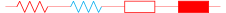
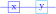
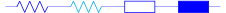

CircuiTikZ
version 1.8.6-unreleased (2026/02/10)
\(\newcommand{\footnotename}{footnote}\)
\(\def \LWRfootnote {1}\)
\(\newcommand {\footnote }[2][\LWRfootnote ]{{}^{\mathrm {#1}}}\)
\(\newcommand {\footnotemark }[1][\LWRfootnote ]{{}^{\mathrm {#1}}}\)
\(\let \LWRorighspace \hspace \)
\(\renewcommand {\hspace }{\ifstar \LWRorighspace \LWRorighspace }\)
\(\newcommand {\TextOrMath }[2]{#2}\)
\(\newcommand {\mathnormal }[1]{{#1}}\)
\(\newcommand \ensuremath [1]{#1}\)
\(\newcommand {\LWRframebox }[2][]{\fbox {#2}} \newcommand {\framebox }[1][]{\LWRframebox } \)
\(\newcommand {\setlength }[2]{}\)
\(\newcommand {\addtolength }[2]{}\)
\(\newcommand {\setcounter }[2]{}\)
\(\newcommand {\addtocounter }[2]{}\)
\(\newcommand {\arabic }[1]{}\)
\(\newcommand {\number }[1]{}\)
\(\newcommand {\noalign }[1]{\text {#1}\notag \\}\)
\(\newcommand {\cline }[1]{}\)
\(\newcommand {\directlua }[1]{\text {(directlua)}}\)
\(\newcommand {\luatexdirectlua }[1]{\text {(directlua)}}\)
\(\newcommand {\protect }{}\)
\(\def \LWRabsorbnumber #1 {}\)
\(\def \LWRabsorbquotenumber "#1 {}\)
\(\newcommand {\LWRabsorboption }[1][]{}\)
\(\newcommand {\LWRabsorbtwooptions }[1][]{\LWRabsorboption }\)
\(\def \mathchar {\ifnextchar "\LWRabsorbquotenumber \LWRabsorbnumber }\)
\(\def \mathcode #1={\mathchar }\)
\(\let \delcode \mathcode \)
\(\let \delimiter \mathchar \)
\(\def \oe {\unicode {x0153}}\)
\(\def \OE {\unicode {x0152}}\)
\(\def \ae {\unicode {x00E6}}\)
\(\def \AE {\unicode {x00C6}}\)
\(\def \aa {\unicode {x00E5}}\)
\(\def \AA {\unicode {x00C5}}\)
\(\def \o {\unicode {x00F8}}\)
\(\def \O {\unicode {x00D8}}\)
\(\def \l {\unicode {x0142}}\)
\(\def \L {\unicode {x0141}}\)
\(\def \ss {\unicode {x00DF}}\)
\(\def \SS {\unicode {x1E9E}}\)
\(\def \dag {\unicode {x2020}}\)
\(\def \ddag {\unicode {x2021}}\)
\(\def \P {\unicode {x00B6}}\)
\(\def \copyright {\unicode {x00A9}}\)
\(\def \pounds {\unicode {x00A3}}\)
\(\let \LWRref \ref \)
\(\renewcommand {\ref }{\ifstar \LWRref \LWRref }\)
\( \newcommand {\multicolumn }[3]{#3}\)
\(\require {textcomp}\)
\(\newcommand {\tothe }[1]{^{#1}}\)
\(\newcommand {\raiseto }[2]{{#2}^{#1}}\)
\(\newcommand {\LWRsiunitxEND }{}\)
\(\def \LWRsiunitxang #1;#2;#3;#4\LWRsiunitxEND {\ifblank {#1}{}{\num {#1}\degree }\ifblank {#2}{}{\num {#2}^{\unicode {x2032}}}\ifblank {#3}{}{\num {#3}^{\unicode {x2033}}}}\)
\(\newcommand {\ang }[2][]{\LWRsiunitxang #2;;;\LWRsiunitxEND }\)
\(\def \LWRsiunitxdistribunit {}\)
\(\newcommand {\LWRsiunitxENDTWO }{}\)
\(\def \LWRsiunitxprintdecimalsubtwo #1,#2,#3\LWRsiunitxENDTWO {\ifblank {#1}{0}{\mathrm {#1}}\ifblank {#2}{}{{\LWRsiunitxdecimal }\mathrm {#2}}}\)
\(\def \LWRsiunitxprintdecimalsub #1.#2.#3\LWRsiunitxEND {\LWRsiunitxprintdecimalsubtwo #1,,\LWRsiunitxENDTWO \ifblank {#2}{}{{\LWRsiunitxdecimal }\LWRsiunitxprintdecimalsubtwo #2,,\LWRsiunitxENDTWO }}\)
\(\newcommand {\LWRsiunitxprintdecimal }[1]{\LWRsiunitxprintdecimalsub #1...\LWRsiunitxEND }\)
\(\def \LWRsiunitxnumplus #1+#2+#3\LWRsiunitxEND {\ifblank {#2}{\LWRsiunitxprintdecimal {#1}}{\ifblank {#1}{\LWRsiunitxprintdecimal {#2}}{\LWRsiunitxprintdecimal {#1}\unicode {x02B}\LWRsiunitxprintdecimal {#2}}}\LWRsiunitxdistribunit }\)
\(\def \LWRsiunitxnumminus #1-#2-#3\LWRsiunitxEND {\ifblank {#2}{\LWRsiunitxnumplus #1+++\LWRsiunitxEND }{\ifblank {#1}{}{\LWRsiunitxprintdecimal {#1}}\unicode {x02212}\LWRsiunitxprintdecimal {#2}\LWRsiunitxdistribunit }}\)
\(\def \LWRsiunitxnumpmmacro #1\pm #2\pm #3\LWRsiunitxEND {\ifblank {#2}{\LWRsiunitxnumminus #1---\LWRsiunitxEND }{\LWRsiunitxprintdecimal {#1}\unicode {x0B1}\LWRsiunitxprintdecimal {#2}\LWRsiunitxdistribunit }}\)
\(\def \LWRsiunitxnumpm #1+-#2+-#3\LWRsiunitxEND {\ifblank {#2}{\LWRsiunitxnumpmmacro #1\pm \pm \pm \LWRsiunitxEND }{\LWRsiunitxprintdecimal {#1}\unicode {x0B1}\LWRsiunitxprintdecimal {#2}\LWRsiunitxdistribunit }}\)
\(\newcommand {\LWRsiunitxnumscientific }[2]{\ifblank {#1}{}{\ifstrequal {#1}{-}{-}{\LWRsiunitxprintdecimal {#1}\times }}10^{\LWRsiunitxprintdecimal {#2}}\LWRsiunitxdistribunit }\)
\(\def \LWRsiunitxnumD #1D#2D#3\LWRsiunitxEND {\ifblank {#2}{\LWRsiunitxnumpm #1+-+-\LWRsiunitxEND }{\mathrm {\LWRsiunitxnumscientific {#1}{#2}}}}\)
\(\def \LWRsiunitxnumd #1d#2d#3\LWRsiunitxEND {\ifblank {#2}{\LWRsiunitxnumD #1DDD\LWRsiunitxEND }{\mathrm {\LWRsiunitxnumscientific {#1}{#2}}}}\)
\(\def \LWRsiunitxnumE #1E#2E#3\LWRsiunitxEND {\ifblank {#2}{\LWRsiunitxnumd #1ddd\LWRsiunitxEND }{\mathrm {\LWRsiunitxnumscientific {#1}{#2}}}}\)
\(\def \LWRsiunitxnume #1e#2e#3\LWRsiunitxEND {\ifblank {#2}{\LWRsiunitxnumE #1EEE\LWRsiunitxEND }{\mathrm {\LWRsiunitxnumscientific {#1}{#2}}}}\)
\(\def \LWRsiunitxnumx #1x#2x#3x#4\LWRsiunitxEND {\ifblank {#2}{\LWRsiunitxnume #1eee\LWRsiunitxEND }{\ifblank {#3}{\LWRsiunitxnume #1eee\LWRsiunitxEND \times \LWRsiunitxnume #2eee\LWRsiunitxEND }{\LWRsiunitxnume #1eee\LWRsiunitxEND
\times \LWRsiunitxnume #2eee\LWRsiunitxEND \times \LWRsiunitxnume #3eee\LWRsiunitxEND }}}\)
\(\newcommand {\num }[2][]{\LWRsiunitxnumx #2xxxxx\LWRsiunitxEND }\)
\(\newcommand {\si }[2][]{\mathrm {\gsubstitute {#2}{~}{\,}}}\)
\(\def \LWRsiunitxSIopt #1[#2]#3{\def \LWRsiunitxdistribunit {\,\si {#3}}{#2}\num {#1}\def \LWRsiunitxdistribunit {}}\)
\(\newcommand {\LWRsiunitxSI }[2]{\def \LWRsiunitxdistribunit {\,\si {#2}}\num {#1}\def \LWRsiunitxdistribunit {}}\)
\(\newcommand {\SI }[2][]{\ifnextchar [{\LWRsiunitxSIopt {#2}}{\LWRsiunitxSI {#2}}}\)
\(\newcommand {\numlist }[2][]{\text {#2}}\)
\(\newcommand {\numrange }[3][]{\num {#2}\ \LWRsiunitxrangephrase \ \num {#3}}\)
\(\newcommand {\SIlist }[3][]{\text {#2}\,\si {#3}}\)
\(\newcommand {\SIrange }[4][]{\num {#2}\,#4\ \LWRsiunitxrangephrase \ \num {#3}\,#4}\)
\(\newcommand {\tablenum }[2][]{\mathrm {#2}}\)
\(\newcommand {\ampere }{\mathrm {A}}\)
\(\newcommand {\candela }{\mathrm {cd}}\)
\(\newcommand {\kelvin }{\mathrm {K}}\)
\(\newcommand {\kilogram }{\mathrm {kg}}\)
\(\newcommand {\metre }{\mathrm {m}}\)
\(\newcommand {\mole }{\mathrm {mol}}\)
\(\newcommand {\second }{\mathrm {s}}\)
\(\newcommand {\becquerel }{\mathrm {Bq}}\)
\(\newcommand {\degreeCelsius }{\unicode {x2103}}\)
\(\newcommand {\coulomb }{\mathrm {C}}\)
\(\newcommand {\farad }{\mathrm {F}}\)
\(\newcommand {\gray }{\mathrm {Gy}}\)
\(\newcommand {\hertz }{\mathrm {Hz}}\)
\(\newcommand {\henry }{\mathrm {H}}\)
\(\newcommand {\joule }{\mathrm {J}}\)
\(\newcommand {\katal }{\mathrm {kat}}\)
\(\newcommand {\lumen }{\mathrm {lm}}\)
\(\newcommand {\lux }{\mathrm {lx}}\)
\(\newcommand {\newton }{\mathrm {N}}\)
\(\newcommand {\ohm }{\mathrm {\Omega }}\)
\(\newcommand {\pascal }{\mathrm {Pa}}\)
\(\newcommand {\radian }{\mathrm {rad}}\)
\(\newcommand {\siemens }{\mathrm {S}}\)
\(\newcommand {\sievert }{\mathrm {Sv}}\)
\(\newcommand {\steradian }{\mathrm {sr}}\)
\(\newcommand {\tesla }{\mathrm {T}}\)
\(\newcommand {\volt }{\mathrm {V}}\)
\(\newcommand {\watt }{\mathrm {W}}\)
\(\newcommand {\weber }{\mathrm {Wb}}\)
\(\newcommand {\day }{\mathrm {d}}\)
\(\newcommand {\degree }{\mathrm {^\circ }}\)
\(\newcommand {\hectare }{\mathrm {ha}}\)
\(\newcommand {\hour }{\mathrm {h}}\)
\(\newcommand {\litre }{\mathrm {l}}\)
\(\newcommand {\liter }{\mathrm {L}}\)
\(\newcommand {\arcminute }{^\prime }\)
\(\newcommand {\minute }{\mathrm {min}}\)
\(\newcommand {\arcsecond }{^{\prime \prime }}\)
\(\newcommand {\tonne }{\mathrm {t}}\)
\(\newcommand {\astronomicalunit }{au}\)
\(\newcommand {\atomicmassunit }{u}\)
\(\newcommand {\bohr }{\mathit {a}_0}\)
\(\newcommand {\clight }{\mathit {c}_0}\)
\(\newcommand {\dalton }{\mathrm {D}_\mathrm {a}}\)
\(\newcommand {\electronmass }{\mathit {m}_{\mathrm {e}}}\)
\(\newcommand {\electronvolt }{\mathrm {eV}}\)
\(\newcommand {\elementarycharge }{\mathit {e}}\)
\(\newcommand {\hartree }{\mathit {E}_{\mathrm {h}}}\)
\(\newcommand {\planckbar }{\mathit {\unicode {x210F}}}\)
\(\newcommand {\angstrom }{\mathrm {\unicode {x212B}}}\)
\(\let \LWRorigbar \bar \)
\(\newcommand {\bar }{\mathrm {bar}}\)
\(\newcommand {\barn }{\mathrm {b}}\)
\(\newcommand {\bel }{\mathrm {B}}\)
\(\newcommand {\decibel }{\mathrm {dB}}\)
\(\newcommand {\knot }{\mathrm {kn}}\)
\(\newcommand {\mmHg }{\mathrm {mmHg}}\)
\(\newcommand {\nauticalmile }{\mathrm {M}}\)
\(\newcommand {\neper }{\mathrm {Np}}\)
\(\newcommand {\yocto }{\mathrm {y}}\)
\(\newcommand {\zepto }{\mathrm {z}}\)
\(\newcommand {\atto }{\mathrm {a}}\)
\(\newcommand {\femto }{\mathrm {f}}\)
\(\newcommand {\pico }{\mathrm {p}}\)
\(\newcommand {\nano }{\mathrm {n}}\)
\(\newcommand {\micro }{\mathrm {\unicode {x00B5}}}\)
\(\newcommand {\milli }{\mathrm {m}}\)
\(\newcommand {\centi }{\mathrm {c}}\)
\(\newcommand {\deci }{\mathrm {d}}\)
\(\newcommand {\deca }{\mathrm {da}}\)
\(\newcommand {\hecto }{\mathrm {h}}\)
\(\newcommand {\kilo }{\mathrm {k}}\)
\(\newcommand {\mega }{\mathrm {M}}\)
\(\newcommand {\giga }{\mathrm {G}}\)
\(\newcommand {\tera }{\mathrm {T}}\)
\(\newcommand {\peta }{\mathrm {P}}\)
\(\newcommand {\exa }{\mathrm {E}}\)
\(\newcommand {\zetta }{\mathrm {Z}}\)
\(\newcommand {\yotta }{\mathrm {Y}}\)
\(\newcommand {\percent }{\mathrm {\%}}\)
\(\newcommand {\meter }{\mathrm {m}}\)
\(\newcommand {\metre }{\mathrm {m}}\)
\(\newcommand {\gram }{\mathrm {g}}\)
\(\newcommand {\kg }{\kilo \gram }\)
\(\newcommand {\of }[1]{_{\mathrm {#1}}}\)
\(\newcommand {\squared }{^2}\)
\(\newcommand {\square }[1]{\mathrm {#1}^2}\)
\(\newcommand {\cubed }{^3}\)
\(\newcommand {\cubic }[1]{\mathrm {#1}^3}\)
\(\newcommand {\per }{\,\mathrm {/}}\)
\(\newcommand {\celsius }{\unicode {x2103}}\)
\(\newcommand {\fg }{\femto \gram }\)
\(\newcommand {\pg }{\pico \gram }\)
\(\newcommand {\ng }{\nano \gram }\)
\(\newcommand {\ug }{\micro \gram }\)
\(\newcommand {\mg }{\milli \gram }\)
\(\newcommand {\g }{\gram }\)
\(\newcommand {\kg }{\kilo \gram }\)
\(\newcommand {\amu }{\mathrm {u}}\)
\(\newcommand {\pm }{\pico \metre }\)
\(\newcommand {\nm }{\nano \metre }\)
\(\newcommand {\um }{\micro \metre }\)
\(\newcommand {\mm }{\milli \metre }\)
\(\newcommand {\cm }{\centi \metre }\)
\(\newcommand {\dm }{\deci \metre }\)
\(\newcommand {\m }{\metre }\)
\(\newcommand {\km }{\kilo \metre }\)
\(\newcommand {\as }{\atto \second }\)
\(\newcommand {\fs }{\femto \second }\)
\(\newcommand {\ps }{\pico \second }\)
\(\newcommand {\ns }{\nano \second }\)
\(\newcommand {\us }{\micro \second }\)
\(\newcommand {\ms }{\milli \second }\)
\(\newcommand {\s }{\second }\)
\(\newcommand {\fmol }{\femto \mol }\)
\(\newcommand {\pmol }{\pico \mol }\)
\(\newcommand {\nmol }{\nano \mol }\)
\(\newcommand {\umol }{\micro \mol }\)
\(\newcommand {\mmol }{\milli \mol }\)
\(\newcommand {\mol }{\mol }\)
\(\newcommand {\kmol }{\kilo \mol }\)
\(\newcommand {\pA }{\pico \ampere }\)
\(\newcommand {\nA }{\nano \ampere }\)
\(\newcommand {\uA }{\micro \ampere }\)
\(\newcommand {\mA }{\milli \ampere }\)
\(\newcommand {\A }{\ampere }\)
\(\newcommand {\kA }{\kilo \ampere }\)
\(\newcommand {\ul }{\micro \litre }\)
\(\newcommand {\ml }{\milli \litre }\)
\(\newcommand {\l }{\litre }\)
\(\newcommand {\hl }{\hecto \litre }\)
\(\newcommand {\uL }{\micro \liter }\)
\(\newcommand {\mL }{\milli \liter }\)
\(\newcommand {\L }{\liter }\)
\(\newcommand {\hL }{\hecto \liter }\)
\(\newcommand {\mHz }{\milli \hertz }\)
\(\newcommand {\Hz }{\hertz }\)
\(\newcommand {\kHz }{\kilo \hertz }\)
\(\newcommand {\MHz }{\mega \hertz }\)
\(\newcommand {\GHz }{\giga \hertz }\)
\(\newcommand {\THz }{\tera \hertz }\)
\(\newcommand {\mN }{\milli \newton }\)
\(\newcommand {\N }{\newton }\)
\(\newcommand {\kN }{\kilo \newton }\)
\(\newcommand {\MN }{\mega \newton }\)
\(\newcommand {\Pa }{\pascal }\)
\(\newcommand {\kPa }{\kilo \pascal }\)
\(\newcommand {\MPa }{\mega \pascal }\)
\(\newcommand {\GPa }{\giga \pascal }\)
\(\newcommand {\mohm }{\milli \ohm }\)
\(\newcommand {\kohm }{\kilo \ohm }\)
\(\newcommand {\Mohm }{\mega \ohm }\)
\(\newcommand {\pV }{\pico \volt }\)
\(\newcommand {\nV }{\nano \volt }\)
\(\newcommand {\uV }{\micro \volt }\)
\(\newcommand {\mV }{\milli \volt }\)
\(\newcommand {\V }{\volt }\)
\(\newcommand {\kV }{\kilo \volt }\)
\(\newcommand {\W }{\watt }\)
\(\newcommand {\uW }{\micro \watt }\)
\(\newcommand {\mW }{\milli \watt }\)
\(\newcommand {\kW }{\kilo \watt }\)
\(\newcommand {\MW }{\mega \watt }\)
\(\newcommand {\GW }{\giga \watt }\)
\(\newcommand {\J }{\joule }\)
\(\newcommand {\uJ }{\micro \joule }\)
\(\newcommand {\mJ }{\milli \joule }\)
\(\newcommand {\kJ }{\kilo \joule }\)
\(\newcommand {\eV }{\electronvolt }\)
\(\newcommand {\meV }{\milli \electronvolt }\)
\(\newcommand {\keV }{\kilo \electronvolt }\)
\(\newcommand {\MeV }{\mega \electronvolt }\)
\(\newcommand {\GeV }{\giga \electronvolt }\)
\(\newcommand {\TeV }{\tera \electronvolt }\)
\(\newcommand {\kWh }{\kilo \watt \hour }\)
\(\newcommand {\F }{\farad }\)
\(\newcommand {\fF }{\femto \farad }\)
\(\newcommand {\pF }{\pico \farad }\)
\(\newcommand {\K }{\mathrm {K}}\)
\(\newcommand {\dB }{\mathrm {dB}}\)
\(\newcommand {\kibi }{\mathrm {Ki}}\)
\(\newcommand {\mebi }{\mathrm {Mi}}\)
\(\newcommand {\gibi }{\mathrm {Gi}}\)
\(\newcommand {\tebi }{\mathrm {Ti}}\)
\(\newcommand {\pebi }{\mathrm {Pi}}\)
\(\newcommand {\exbi }{\mathrm {Ei}}\)
\(\newcommand {\zebi }{\mathrm {Zi}}\)
\(\newcommand {\yobi }{\mathrm {Yi}}\)
\(\let \unit \si \)
\(\let \qty \SI \)
\(\let \qtylist \SIlist \)
\(\let \qtyrange \SIrange \)
\(\let \numproduct \num \)
\(\let \qtyproduct \SI \)
\(\let \complexnum \num \)
\(\newcommand {\complexqty }[3][]{(\complexnum {#2})\si {#3}}\)
\(\newcommand {\toprule }[1][]{\hline }\)
\(\let \midrule \toprule \)
\(\let \bottomrule \toprule \)
\(\def \LWRbooktabscmidruleparen (#1)#2{}\)
\(\newcommand {\LWRbooktabscmidrulenoparen }[1]{}\)
\(\newcommand {\cmidrule }[1][]{\ifnextchar (\LWRbooktabscmidruleparen \LWRbooktabscmidrulenoparen }\)
\(\newcommand {\morecmidrules }{}\)
\(\newcommand {\specialrule }[3]{\hline }\)
\(\newcommand {\addlinespace }[1][]{}\)
\(\require {upgreek}\)
\(\def \LWRsiunitxrangephrase {\TextOrMath { }{\ }\protect \mbox {to}\TextOrMath { }{\ }}\)
\(\def \LWRsiunitxdecimal {.}\)
7 Colors
Color support in CircuiTikZ has been quite limited up to version 1.5.1; from that one onward there has been an effort to make components’ behavior more intuitive.
Part of the problem is how colors in paths are treated by TikZ itself; you can see part of the discussion on this issue and in this question on TeX.SX — many thanks to @muzimuzhi for helping there. Basically, nodes are drawn after the
path is completed, and color is applied to the path at the end. Look at this code (pure TikZ, no CircuiTikZ here):
\tikz \draw[thick] (0,0) -- (1,0) {[color=red] -- (2,0)
node[draw]{}} --(3,0); \par
\tikz \draw[thick] (0,0) -- (1,0) [color=red] -- (2,0) node[draw]{} --(3,0);
So the path is drawn with the last “effective” (in current group) color. The deferred behavior of the color properties is very difficult to track for CircuiTikZ, especially when the shorthand color-name (e.g.,
red instead of color=red) is used. CircuiTikZ will try to keep track of the colors specified by color=... and fill=..., but if you use the implicit way (\draw[red]...) it often fails.
If you’re adventurous, you can try to add
\usepackage{regexpatch}\ctikzPatchImplicitColor
after loading CircuiTikZ, and it will try to patch the default commands to keep track of the “current color”; if it fails will give a warning like patch failed, use only explicit color=.... This is, unfortunately, not compatible with package
xpatch (and much others, which load xpatch).147.
Before 1.5.0, CircuiTikZ used black as the default color. Now it tries to follow the current color, as TikZ does normally; but notice that there is a difference with the fill strategy:
\color{red}
Red text
\tikz \draw (0,0) -- node[draw] {x} (1,0) -- node[draw=
cyan] {y} (2,0);
\tikz \draw (0,0) to[R] (2,0) to[R,color=cyan] (4,0) to
[generic] (6,0) to [fullgeneric] (8,0);
\color{blue}
Blue text
\tikz \draw (0,0) -- node[draw] {x} (1,0) -- node[draw=
cyan] {y} (2,0);
\tikz \draw (0,0) to[R] (2,0) to[R,color=cyan] (4,0) to
[generic] (6,0) to [fullgeneric] (8,0);
\color{black}
Black text
\tikz \draw[fill=yellow] (0,0) -- node[draw, fill] {x}
(1,0) -- node[draw=cyan] {y} (2,0);
\tikz \draw[fill=yellow] (0,0) to[R] (2,0) to[R,color=cyan] (4,0) to [generic] (6,0) to [fullgeneric] (8,0);
Red text 
Blue text  
Black text
CircuiTikZ components that are fillable will inherit the fill property of the path (it is almost impossible to do otherwise) as if the fill flag was present. “Full”-type elements (for example, full diodes or
similar) are filled with the draw color; elements with intrinsic labels (i.e., labels that are part of the shape, like signs on amplifiers and pin numbers in chips) are drawn with the “draw” colors.
Basically, you should have no problem if:
-
1. You stick to use styles (see 3.3.2) for filling your components, or using a direct fill=... option in the component node or to
option;
-
2. do not try to change the color mid-path; sometimes it works (see the examples below), but it’s better to avoid it (using different paths is better);
-
3. when coloring whole circuits, it’s better to use the option color=... in your global picture options or in the \draw command (not just the color name as a shorthand);
-
4. forget about transparency.
Nevertheless, if you really need to do strange things with colors you can read on; you can do almost everything but there are several glitches to take into account.
Moreover, in some cases, also the engine you are using (as pdflatex, xelatex, and so on) can impact corner cases (or even not so corner, like in american-style
voltage source signs).
7.1 Shape colors
The color of the components is stored in the key \circuitikzbasekey/color. CircuiTikZ tries to follow the color set in TikZ, although sometimes it fails. The following circuit will fail to draw the circuit in red if the
patching of the inner commands of TikZ fails, like for example in ConTeXt.
\begin{circuitikz} \draw[red]
(0,2) node[and port](myand1){1}
(0,0) node[and port](myand2){2}
(2,1) node[xnor port](myxnor){3}
(myand1.out) -| (myxnor.in 1)
(myand2.out) -| (myxnor.in 2)
;\end{circuitikz}
If you see this problem, please do not use just the color name as a style, like [red], but rather assign the style [color=red].
\begin{circuitikz} \draw[color=red]
(0,2) node[and port](myand1){1}
(0,0) node[and port](myand2){2}
(2,1) node[xnor port](myxnor){3}
(myand1.out) -| (myxnor.in 1)
(myand2.out) -| (myxnor.in 2)
;\end{circuitikz}
One can, of course, change the color directly in the component:
\begin{circuitikz} \draw
(0,0) node[pnp, color=blue](pnp2){q1}
(pnp2.B) node[pnp, xscale=-1, anchor=B, color=brown](
pnp1){\ctikzflipx{q2}}
(pnp1.C) node[npn, anchor=C, color=green](npn1){q3}
(pnp2.C) node[npn, xscale=-1, anchor=C, color=magenta
](npn2){\ctikzflipx{q4}}
(pnp1.E) -- (pnp2.E) (npn1.E) -- (npn2.E)
(pnp1.B) node[circ]{} |- (pnp2.C) node[circ]{}
;\end{circuitikz}
The all-in-one stream of bipoles poses some challenges, as only the actual body of the bipole, and not the connecting lines, will be rendered in the specified color (Notice that the following example uses the special siunitx shorthand; you can use it only in
simple cases like here, in general using the full \SI{} or \qty{} commands).
\begin{circuitikz} \draw
(0,0) to[V=1<\volt>] (0,2)
to[R=1<\ohm>, color=red] (2,2)
to[C=1<\farad>] (2,0) -- (0,0)
;\end{circuitikz}
The postponed application of colors creates a problem if you want to use arrows for voltages, because the “arrows” are partially part of the path, partially nodes:
\begin{circuitikz} \draw
(0,0){[red] to[V=1<\volt>] (0,2) }
to[R=1<\ohm>] (2,2)
to[C=1<\farad>] (2,0) -- (0,0)
;\end{circuitikz}
...and that can become quite frustrating:
\begin{circuitikz} \draw
(0,0) to[V=1<\volt>, color=red] (0,2)
to[R=1<\ohm>] (2,2)
to[C=1<\farad>] (2,0) -- (0,0)
;\end{circuitikz}
In those cases, the only way out is to specify different paths (and/or using advanced voltages, see 5.8)
\begin{circuitikz} \draw[color=red]
(0,0) to[V=1<\volt>, color=red] (0,2);
\draw (0,2) to[R=1<\ohm>] (2,2)
to[C=1<\farad>] (2,0) -- (0,0)
;\end{circuitikz}
7.2 Fill colors
Since version 0.9.0, you can also fill most shapes with a color (the manual specifies which ones are fillable or not). The syntax is quite intuitive:
\begin{circuitikz} \draw
(0,2) node[and port, fill=yellow](myand1){1}
(0,0) node[and port, fill=cyan](myand2){2}
(2,1) node[xnor port,fill=red!30!white](myxnor){3}
(myand1.out) -| (myxnor.in 1)
(myand2.out) -| (myxnor.in 2)
;\end{circuitikz}
This fill color will override any color defined by the style (see section 3.3.2). If you want to override a style fill color with no-fill for a specific component, you need to override the style — it’s
a bit unfortunate, but should be an exceptional thing anyway. Notice that in simple case fill opacity works, but don’t count too much on it.
\begin{circuitikz}
\ctikzset{logic ports/fill=cyan!30!white}
\draw[red] (-0.5,3) -- (-0.5, -1);
\draw[red] (1.5,3) -- (1.5, -1);
\draw
(0,2) node[and port](myand1){1}
(0,0) node[and port, fill=cyan, fill opacity=0.7](
myand2){2}
(2,1) node[xnor port, circuitikz/logic ports/fill=
none
](myxnor){3}
(myand1.out) -| (myxnor.in 1)
(myand2.out) -| (myxnor.in 2)
;\end{circuitikz}
You can combine shape colors with fill colors, too, but you should use the explicit color option style for this:
\begin{circuitikz} \draw[color=red]
(0,2) node[and port, fill=yellow](myand1) {1}
(0,0) node[and port, fill=cyan] (myand2){2}
(2,1) node[xnor port,fill=red!30!white](myxnor){3}
(myand1.out) -| (myxnor.in 1)
(myand2.out) -| (myxnor.in 2)
;\end{circuitikz}
\begin{circuitikz} \draw
(0,2) node[and port, color=black](myand1){1}
(0,0) node[and port, color=blue, fill=cyan](myand2)
{2}
(2,1) node[xnor port, color=red, fill=cyan](myxnor)
{3}
(myand1.out) -| (myxnor.in 1)
(myand2.out) -| (myxnor.in 2)
;\end{circuitikz}
7.2.1 Background colors different from white
Notice also that the connection point is always filled, and the color tries to follow the color of the filling of the component (but look at section 6.1.1). Moreover, if you want
to pass fill transparency down to path-style components, you have to put it into the options of the \draw command.
\begin{circuitikz}
\fill[cyan] (0,3.0) rectangle (7,7);
\draw [fill opacity=0.5] (1,6.5) to[generic, fill=
white,o-o] ++(2,0);
\draw (1,5.5) to[short, fill=red, o-o] ++(1,0) to[
short, -o] ++(1,0);
\draw[fill=yellow] (1,5) to[short, o-o] ++(1,0) to[
short, -o] ++(1,0);
\draw (1,4.5) to[short, o-o] ++(1,0) to[short, -o]
++(1,0);
\draw (1,4) node[ocirc]{} -- ++(1,0) node[ocirc]{};
\draw [thick, color=green!50!black] (4,4) to [D,o-o
,fill=yellow] ++(0,2) to[D*, fill=yellow]
++(2,0) to[D*,fill=yellow] ++(0,-2) to[D, fill
=red, o-o] ++(-2,0);
\end{circuitikz}
As you can see, the “black” components (as D*) follow the color of the line, not the fill.
Note, however, that if you choose a colored background, for example with the \pagecolor{} command or with other tricks, the nodes will be by default still filled with white.
\begin{circuitikz}[european]
\fill[color=blue] (-1,-1) rectangle (4,1);
\draw[color=white] (0,0) to[R, o-o] ++(3,0);
\end{circuitikz}
You have two solutions for this. You can redefine the o-o (and the similar commands -o, o-, *-o and
so on) with a blue filled “open” pole:
\tikzset{bcirc/.style={shape=ocirc, fill=blue}}
\ctikzset{o-o/.style ={
\circuitikzbasekey/bipole/nodes/left=bcirc,
\circuitikzbasekey/bipole/nodes/right=bcirc}}
\begin{circuitikz}[european]
\fill[color=blue] (-1,-1) rectangle (4,1);
\draw[color=white] (0,0) to[R, o-o] ++(3,0);
\end{circuitikz}
Also, since v1.2.3, you can set the key open poles fill (default: white which works for ocirc, odiamondpole and osquarepole):
\begin{circuitikz}[european]
\ctikzset{open poles fill=blue}
\fill[color=blue] (-1,-1) rectangle (4,1);
\draw[color=white] (0,0) to[R, o-o] ++(3,0);
\end{circuitikz}